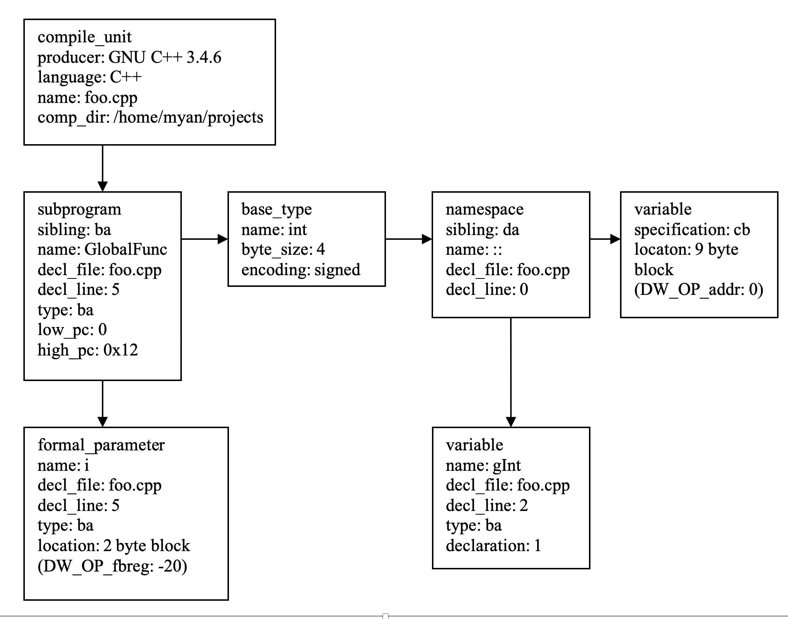

更新
2024-07-05
本书已经出版
由于本库的草稿是我之前一个人写的，所以质量和正确性都不如经过两位作者和出版社编辑审阅和校正过的书稿。
如果你想阅读更加完善的版本，推荐购买正版书籍。
DWARF格式
DWARF像结构体一样以树的形式组织调试符号。这跟大部分语言内在也是树结构的词法作用域相对应。每一个树节点是一个DIE (Debug information entry)，它带了特定的调试符号：一个对象，一个函数，一个源文件等等。一个结点可能具有任意数量的子结点或者兄弟结点。比如，一个函数DIE可能有很多代表函数局部变量的子DIEs。
我不会深入每一个基准DWARF格式和可以在线获取的细节。举个例子，在http://www.dwarfstd.org有许多关于DWARF的论文、教程和形式化的文档。另外一个有效的方式是深入开源GNU编译器gcc和调试器gdb，他们采用DWARF。从调试的角度，知道调试符号是什么，它们是怎么组织的，和怎样在有兴趣的时候观察它们，足够了。最好学习的方式大概是学习一个例子。让我们来看看在下面列出来的简单程序.
foo.cpp:
1
2 int gInt = 1;
3
4 int GlobalFunc(int i)
5 {
6 return i+gInt;
7 }
使用下面的命令选项编译文件
$ g++ -g –S foo.cpp
-g选项指示g++编译器生成调试符号，-S选项则是生成汇编文件用于分析。默认，编译器生成汇编文件为中间文件并通过管道直接发送到汇编器。因此如果我们需要审阅汇编，我们需要显式地让编译器在磁盘文件生成汇编。
生成汇编文件的完整列表放在一起的源码中。使用上面的命令生成你自己的汇编文件也是简单的。这个文件有点长，但是我鼓励读者浏览它，这样你将拥有一个调试符号各个部分的全局图像。下面是汇编文件的一个缩略图。因为这个文件是作为汇编器的输入，而不是让人阅读的，第一眼看它的时候可能会很困惑。在我们学习调试符号的每一个组件的过程，我将解释它们的意思。
.file "foo.cpp"
.section .debug_abbrev,"",@progbits
.Ldebug_abbrev0:
.section .debug_info,"",@progbits
.Ldebug_info0:
.section .debug_line,"",@progbits
.Ldebug_line0:
.text
.Ltext0:
.globl gInt
.data
.align 4
.type gInt, @object
.size gInt, 4
gInt:
.long 1
.text
.align 2
.globl _Z10GlobalFunci
.type _Z10GlobalFunci, @function
_Z10GlobalFunci:
.LFB2:
.file 1 "foo.cpp"
.loc 1 5 0
pushq %rbp
.LCFI0:
movq %rsp, %rbp
.LCFI1:
movl %edi, -4(%rbp)
.LBB2:
.loc 1 6 0
movl gInt(%rip), %eax
addl -4(%rbp), %eax
.LBE2:
.loc 1 7 0
leave
ret
.LFE2:
.size _Z10GlobalFunci, .-_Z10GlobalFunci
.section .debug_frame,"",@progbits
.Lframe0:
.long .LECIE0-.LSCIE0
.LSCIE0:
.long 0xffffffff
...
.section .debug_loc,"",@progbits
.Ldebug_loc0:
.LLST0:
.quad .LFB2-.Ltext0
.byte 0x0
...
.section .debug_info
.long 0xe6
.value 0x2
.long .Ldebug_abbrev0
.byte 0x8
.uleb128 0x1
.long .Ldebug_line0
.quad .Letext0
.quad .Ltext0
.string "GNU C++ 3.4.6 20060404 (Red Hat 3.4.6-9)"
.byte 0x4
.string "foo.cpp"
.string "/home/myan/projects/p_debugging"
.uleb128 0x2
.long 0xba
.byte 0x1
.string "GlobalFunc"
.byte 0x1
.byte 0x5
.string "_Z10GlobalFunci"
.long 0xba
.quad .LFB2
.quad .LFE2
.long .LLST0
===>.uleb128 0x3
.string "i"
.byte 0x1
.byte 0x5
.long 0xba
.byte 0x2
.byte 0x91
.sleb128 -20
===>.byte 0x0
.uleb128 0x4
.string "int"
.byte 0x4
.byte 0x5
.uleb128 0x5
.long 0xda
.string "::"
.byte 0x2
.byte 0x0
.uleb128 0x6
.string "gInt"
.byte 0x1
.byte 0x2
.long 0xba
.byte 0x1
.byte 0x1
.byte 0x0
.uleb128 0x7
.long 0xcb
.byte 0x9
.byte 0x3
.quad gInt
.byte 0x0
.section .debug_abbrev
.uleb128 0x1
...
.section .debug_pubnames,"",@progbits
.long 0x26
...
.section .debug_aranges,"",@progbits
.long 0x2c
...
你可以看到，上面汇编文件的大部分都是为了调试符号生成的。只有一小部分行是可执行指令。对于短的程序，这也是典型的。因为这样的体积，调试符号被编码到二进制文件里，用来缩短文件大小。我们通过如下的工具解码它，来审阅调试符号。
$readelf –-debug-dump foo.o
这个命令输出在目标文件foo.o所有的调试符号。它们被分为模块。每个模块是一种类型的调试符号并存储在ELF目标文件的唯一section里面(在第6章，我们会讨论二进文件包含ELF sections的更多细节)。让我们一个一个地过一过这些模块。
第一个要看的是缩略表，存储在.debug_abbrew里面。这个表描述了减少DWARF文件大小的编码算法。在缩略表里面的DIEs不是真实的。相反它们作为在其他节(section)相同类型和属性的实际DIEs的模板。一个真实的DIE项简单地有一个到缩略表模板DIEs的索引和对应的实例化这个模板DIE的数据。例子中的缩略表有7项，包含了编译单元、全局变量，数据类型、输入参数，局部变量等等的模板。表里的第三项（用===>标记着）声明了一种具有五部分调试信息的DIE：名字，文件，行号，数据类型和位置。我们将会看到一个真实的DIE是如何引用这个模板的。
Contents of the .debug_abbrev section:
Number TAG
1 DW_TAG_compile_unit [has children]
DW_AT_stmt_list DW_FORM_data4
DW_AT_high_pc DW_FORM_addr
DW_AT_low_pc DW_FORM_addr
DW_AT_producer DW_FORM_string
DW_AT_language DW_FORM_data1
DW_AT_name DW_FORM_string
DW_AT_comp_dir DW_FORM_string
2 DW_TAG_subprogram [has children]
DW_AT_sibling DW_FORM_ref4
DW_AT_external DW_FORM_flag
DW_AT_name DW_FORM_string
DW_AT_decl_file DW_FORM_data1
DW_AT_decl_line DW_FORM_data1
DW_AT_MIPS_linkage_name DW_FORM_string
DW_AT_type DW_FORM_ref4
DW_AT_low_pc DW_FORM_addr
DW_AT_high_pc DW_FORM_addr
DW_AT_frame_base DW_FORM_data4
===>3 DW_TAG_formal_parameter [no children]
DW_AT_name DW_FORM_string
DW_AT_decl_file DW_FORM_data1
DW_AT_decl_line DW_FORM_data1
DW_AT_type DW_FORM_ref4
===>DW_AT_location DW_FORM_block1
4 DW_TAG_base_type [no children]
DW_AT_name DW_FORM_string
DW_AT_byte_size DW_FORM_data1
DW_AT_encoding DW_FORM_data1
5 DW_TAG_namespace [has children]
DW_AT_sibling DW_FORM_ref4
DW_AT_name DW_FORM_string
DW_AT_decl_file DW_FORM_data1
DW_AT_decl_line DW_FORM_data1
6 DW_TAG_variable [no children]
DW_AT_name DW_FORM_string
DW_AT_decl_file DW_FORM_data1
DW_AT_decl_line DW_FORM_data1
DW_AT_type DW_FORM_ref4
DW_AT_external DW_FORM_flag
DW_AT_declaration DW_FORM_flag
7 DW_TAG_variable [no children]
DW_AT_specification DW_FORM_ref4
DW_AT_location DW_FORM_block1
下一节(.debug_info)包含了调试符号的核心：数据类型的信息、变量、函数等等。注意DIEs是如何编码和通过索引引用缩略表里面的项。在下面被==>包围的DIE描述函数GlobalFunc唯一的传入参数。这个DIE引用了缩略表里索引为3的项。接着它使用实际的信息填充指定的五个字段：参数名字是”i”；它在文件1；第5行；参数的类型被另外一个DIE（ba）描述；参数存在偏移为2的地方。
The section .debug_info contains:
Compilation Unit @ 0:
Length: 230
Version: 2
Abbrev Offset: 0
Pointer Size: 8
<0><b>: Abbrev Number: 1 (DW_TAG_compile_unit)
DW_AT_stmt_list : 0
DW_AT_high_pc : 0x12
DW_AT_low_pc : 0
DW_AT_producer : GNU C++ 3.4.6 20060404 (Red Hat 3.4.6-9)
DW_AT_language : 4 (C++)
DW_AT_name : foo.cpp
DW_AT_comp_dir : /home/myan/projects/p_debugging
<1><72>: Abbrev Number: 2 (DW_TAG_subprogram)
DW_AT_sibling : <ba>
DW_AT_external : 1
DW_AT_name : GlobalFunc
DW_AT_decl_file : 1
DW_AT_decl_line : 5
DW_AT_MIPS_linkage_name: _Z10GlobalFunci
DW_AT_type : <ba>
DW_AT_low_pc : 0
DW_AT_high_pc : 0x12
DW_AT_frame_base : 0 (location list)
=><2><ad>: Abbrev Number: 3 (DW_TAG_formal_parameter)
DW_AT_name : i
DW_AT_decl_file : 1
DW_AT_decl_line : 5
DW_AT_type : <ba>
====>DW_AT_location : 2 byte block: 91 6c (DW_OP_fbreg: -20)
<1><ba>: Abbrev Number: 4 (DW_TAG_base_type)
DW_AT_name : int
DW_AT_byte_size : 4
DW_AT_encoding : 5 (signed)
<1><c1>: Abbrev Number: 5 (DW_TAG_namespace)
DW_AT_sibling : <da>
DW_AT_name : ::
DW_AT_decl_file : 2
DW_AT_decl_line : 0
<2><cb>: Abbrev Number: 6 (DW_TAG_variable)
DW_AT_name : gInt
DW_AT_decl_file : 1
DW_AT_decl_line : 2
DW_AT_type : <ba>
DW_AT_external : 1
DW_AT_declaration : 1
<1><da>: Abbrev Number: 7 (DW_TAG_variable)
DW_AT_specification: <cb>
DW_AT_location : 9 byte block: 3 0 0 0 0 0 0 0 0 (DW_OP_addr: 0)
有了这个编码方式，参数“i”的调试符号仅仅在目标文件占了13个字节。下面的objdump命令显示了.debug_info节的原始数据。参数i的DIE在输出被==>和<==包围。
$objdump -s --section=.debug_info foo.o
foo.o: file format elf64-x86-64
Contents of section .debug_info:
0000 e6000000 02000000 00000801 00000000 ................
0010 00000000 00000000 00000000 00000000 ................
0020 474e5520 432b2b20 332e342e 36203230 GNU C++ 3.4.6 20
0030 30363034 30342028 52656420 48617420 060404 (Red Hat
0040 332e342e 362d3929 0004666f 6f2e6370 3.4.6-9)..foo.cp
0050 70002f68 6f6d652f 6d79616e 2f70726f p./home/myan/pro
0060 6a656374 732f705f 64656275 6767696e jects/p_debuggin
0070 670002ba 00000001 476c6f62 616c4675 g.......GlobalFu
0080 6e630001 055f5a31 30476c6f 62616c46 nc..._Z10GlobalF
0090 756e6369 00ba0000 00000000 00000000 unci............
00a0 00000000 00000000 00000000 00==>036900 ..............i.
00b0 0105ba00 00000291 6c00<==0469 6e740004 ........l..int..
00c0 0505da00 00003a3a 00020006 67496e74 ......::....gInt
00d0 000102ba 00000001 010007cb 00000009 ................
00e0 03000000 00000000 0000 ..........
如果回到汇编文件foo.s，你会看到传入参数i的调试符号在下面这些行中。它们在前面列出来的汇编文件被==>和<==包围着。
.uleb128 0x3
.string "i"
.byte 0x1
.byte 0x5
.long 0xba
.byte 0x2
.byte 0x91
.sleb128 -20
.byte 0x0
上面的DIE项看起来像C结构体。编码后的字节的意义请看图1-1。它的开始是索引（3）到缩略表指明DIE剩下数据的格式。读者可以参考前面列出来的缩略表的第三个DIE模板。剩下的两个字节代表一个null结尾的字符串，即参数的名字。接下来对应地是文件号（1）和行号（5）。参数的类型由另外一个DIE（ba）来提供。接下来的数据是参数的大小，即2个字节。参数的存储位置由接下来的两个字节指定，即相对寄存器fbreg偏移-20。最后DIE以字节零为结尾。

如果有的话，每一个DIE指定它的父结点，子结点和兄弟结点。图1-2显示了节.debug_info列出的DIEs的父子和兄弟联系。注意参数i的DIE是函数GlobalFuncDIE的子结点，这也跟源程序的作用域一致。

源代码行号的调试符号放在了.debug_line节。它由一系列的操作码组成，调试器用这些操作码创建状态表。每一个状态组成有距离函数开头的偏移指令地址、对应的源代码行号和文件名。怎么从操作码创建状态表呢？它开始于设置初始值的操作码，如开始指令地址。每一次源代码行号改变，操作码向前移动操作地址一个变化值。调试器运行这些操作码和每一次状态改变的时候向状态表添加一行。下面的readelf输出显示样例程序的行号调试符号。注意高亮的行以可读的形式描述了操作码的操作。指令地址开始于0x0，结束于0x12，对应的行号从4增加到7.
Dump of debug contents of section .debug_line:
Length: 66
DWARF Version: 2
Prologue Length: 41
Minimum Instruction Length: 1
Initial value of 'is_stmt': 1
Line Base: -5
Line Range: 14
Opcode Base: 10
(Pointer size: 8)
Opcodes:
Opcode 1 has 0 args
Opcode 2 has 1 args
Opcode 3 has 1 args
Opcode 4 has 1 args
Opcode 5 has 1 args
Opcode 6 has 0 args
Opcode 7 has 0 args
Opcode 8 has 0 args
Opcode 9 has 1 args
The Directory Table is empty.
The File Name Table:
Entry Dir Time Size Name
1 0 0 0 foo.cpp
2 0 0 0 <internal>
===>Line Number Statements:
Extended opcode 2: set Address to 0x0
Special opcode 9: advance Address by 0 to 0x0 and Line by 4 to 5
Special opcode 104: advance Address by 7 to 0x7 and Line by 1 to 6
Special opcode 132: advance Address by 9 to 0x10 and Line by 1 to 7
Advance PC by 2 to 12
Extended opcode 1: End of Sequence
<===
CFI（Call Frame Information)，在.debug_frame节，描述了一个函数的栈帧和它的寄存器是如何分配的。调试器使用这个信息来回卷（unwind)栈。比如，如果一个函数的局部变量分配在一个寄存器里面，寄存器稍后被一个调用的函数侵占，它原来的值会保存在被调用的函数的栈帧，调试器需要借助CFI来弄明白保存的寄存器的栈地址，从而观察或者改变对应的局部变量。
跟源代码行号很像，CFI被编码为一系列的操作码。调试器以给定的顺序运行这些操作码来创建跟指令地址前进对应的寄存器的状态表。根据状态表，调试器会知道栈帧的地址是在哪里（通常被栈帧寄存器指向），当前函数的返回值和函数实参的位置。下面列出的是例子的CFI调试符号。它显示了这个简单的函数glbalFunc的寄存器r6的信息
The section .debug_frame contains:
00000000 00000014 ffffffff CIE
Version: 1
Augmentation: ""
Code alignment factor: 1
Data alignment factor: -8
Return address column: 16
DW_CFA_def_cfa: r7 ofs 8
DW_CFA_offset: r16 at cfa-8
DW_CFA_nop
DW_CFA_nop
DW_CFA_nop
DW_CFA_nop
DW_CFA_nop
DW_CFA_nop
00000018 0000001c 00000000 FDE cie=00000000 pc=00000000..00000012
DW_CFA_advance_loc: 1 to 00000001
DW_CFA_def_cfa_offset: 16
DW_CFA_offset: r6 at cfa-16
DW_CFA_advance_loc: 3 to 00000004
DW_CFA_def_cfa_reg: r6
还有一些其他节存着各式各样的调试信息，列出如下。.debug_loc节包含宏表达式的调试符号。这个文件没有宏。节.debug_pubnames是全局变量和函数的查找表。它是用来更快地访问这些调试项。这里例子有两项:全局变量gInt和全局函数GlobalFunc。节.debug_aranges包含包含一系列的地址长度对，说明每个编译单元的地址范围。
Contents of the .debug_loc section:
Offset Begin End Expression
00000000 00000000 00000001 (DW_OP_breg7: 8)
00000000 00000001 00000004 (DW_OP_breg7: 16)
00000000 00000004 00000012 (DW_OP_breg6: 16)
Contents of the .debug_pubnames section:
Length: 38
Version: 2
Offset into .debug_info section: 0
Size of area in .debug_info section: 234
Offset Name
114 GlobalFunc
218 gInt
The section .debug_aranges contains:
Length: 44
Version: 2
Offset into .debug_info: 0
Pointer Size: 8
Segment Size: 0
Address Length
00000000 18
上面讨论的各种节为调试器提供了足够的信息来实现任何的调试功能。比如，将当前地址地址映射到它对应的源代码行和在程序被调试器停止的时候打印局部变量。
调试符号一开始生成在每个编译单元，就如我们刚才看到的目标文件示例。在链接时候，多个编译单元的调试符号被收集，组合和链接到可执行文件或者库文件。在我们继续调试器的实现之前，让我告诉你一个通过类型的调试符号揭露的bug故事。这个故事说明了看上去在不同模块的不一致的调试符号表明代码或者构建过程的问题。